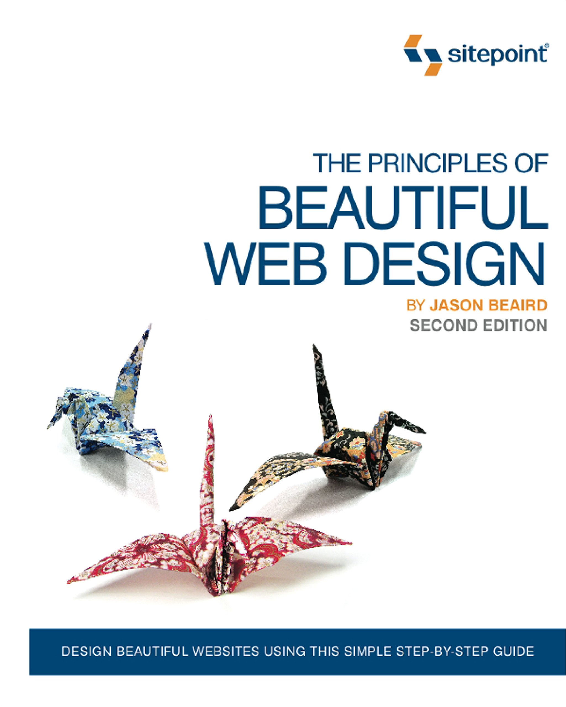

Di tulis oleh Jason Beaird, terbit pada tahun 2007
Buku ini memandu anda melewati proses-proses pembuatan desain yang baik, mulai dari tahap awal hingga akhir, dengan menggunakan petunjuk-petunjuk yang mudah diikuti, tanpa memerlukan pengalaman dalam merancang web terlebih dahulu. Anda akan belajar hal-hal berikut: Menentukan warna secara efektif dan merancang skema warna, Membuat layout responsif yang dapat tampil dengan baik salam berbagai perangkat yang berbeda. Menggunakan tekstur: titik (point), garis (line), bentuk (shape), isi (volume), kedalaman (depth), dan pola (pattern) Membangun fondasi layout yang cerdas dengan menggunakan whitespace dan grid. Menguasai tipografi dan menggunakan web fonts untuk mengubah desain yang membosankan menjadi memesona, Menggunakan framework seperti foundation dan bootstrap untuk menciptakan desain yang terstruktur dengan baik, Memilih, mengedit, dan menempatkan gambar dengan efektif, dan masih banyak lagi.
Di tulis oleh Jason Beaird, terbit pada tahun 2010
Edisi kedua dari The Principles of Beautiful Web Design ini adalah buku yang ideal untuk orang-orang yang dapat membuat situs web, tetapi mencari keterampilan dan pengetahuan untuk meningkatkan situs mereka secara visual. Buku ini akan mengajarkan Anda bagaimana: Memahami proses apa yang membuat "desain yang baik", dari penemuan hingga implementasi, Menggunakan warna secara efektif, mengembangkan skema warna, dan membuat palet, Membuat tata letak yang menyenangkan menggunakan kisi, aturan sepertiga, dan simetri, Gunakan tekstur: garis, titik, bentuk, volume, dan kedalaman, Terapkan tipografi untuk membuat desain biasa tampak hebat, Pilih, edit, dan posisikan citra yang efektif